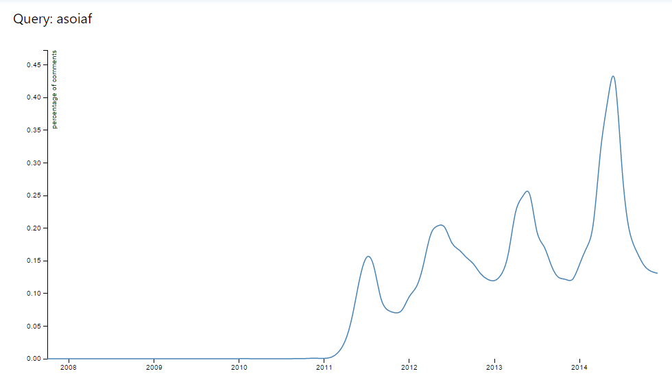
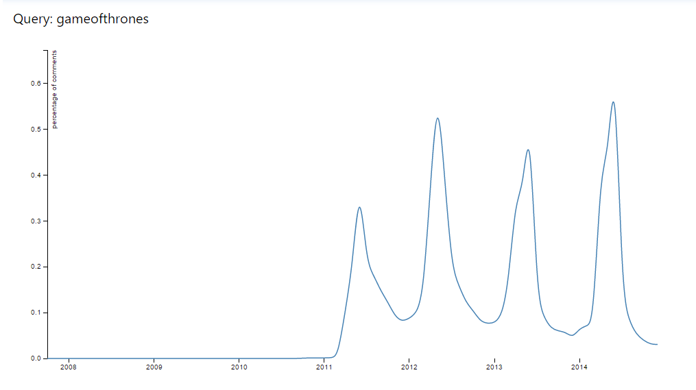
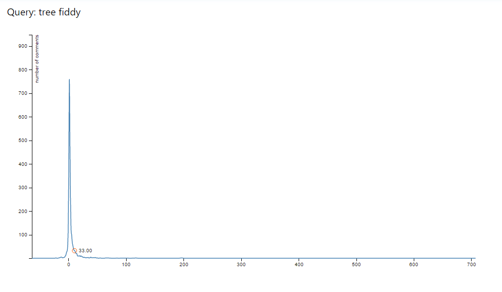

Members
The members of this group are mjzhu, bp12, eh49, and amai.
Abstract
Our project focused on creating a tool that allowed users to simply and easily interact with massive amounts of data and explore trends in Internet language over a number of domains. We randomly sampled a 100GB+ subset of every reddit comment in existance and loaded them into our own data pipeline in order to be able to run fast and rich queries on the data. Our front end web application allows users to run many different types of interactive queries on our data, and we present the results in an informative visualization. Our goal was to develop a tool that would allow anyone to view trends and gain insight from one of the biggest digital communities in existence.
Data
The source of our data is the entire reddit comment database, which is hosted on Google BigQuery, a cloud based SQL-like database for storing massive amounts of data. The data was so big that it had to be split up into different years and even months. Fortunately for us, the data had already been relatively cleaned and put into a nice query-able storage, so we did not have to put too much of an effort to clean it further (except for removing newlines and getting rid of unneeded fields). Each row of data contained the following fields:
body, score_hidden, archived, name, author, author_flair_text, downs, created_utc, subreddit_id, link_id, parent_id, score, retrieved_on, controversiality
gilded, id, subreddit, ups, distinguished, author_flair_css_class, removal_reason. Here is a sample row of data:
body,score_hidden,archived,name,author,author_flair_text,downs,created_utc,
subreddit_id,link_id,parent_id,score,retrieved_on,controversiality,gilded,id,subreddit,ups,distinguished,author_flair_css_class,removal_reason
"No direct tie to technology/programming, but very interesting and relivant. Great read",false,true,t1_c02gs6n,jwstaddo2,,0,1195062204,t5_3b8o,t3_60hwa,
t3_60hwa,0,1427422828,0,0,c02gs6n,joel,0,,,
Clearly, many of these fields were unnecessary for our purposes, and some, like
ups and
downs were always null (may have been left over from reddit's first database and was never updated). Thus, we only kept
author which is the username of the author of the comment,
subreddit which is the name of the subreddit of the post,
score which is the number of votes (can be negative),
created_utc which is the timestamp the comment was posted,
body which is the actual comment, and
gilded which only very highly regarded comments have. Now a row of our data looks like:
author,subreddit,votescore,created_utc,body,gilded
Taffer,redditgw,1,2010-02-04T08:37:13Z,"I would be happy to join, not sure if I am going to play much, but numbers helps I guess. Only have original and
factions",0
This not only makes the data easier to manage, it also reduces the amount of data that we need to process.
Hypothesis
Methodology
Data Integration
The data integration step involved moving the data out of BigQuery and into our Solr server. Solr is a document indexing search engine that allows users to insert a huge number of documents and specify indexing, and supports fast full text search. In theory, moving the data from BigQuery to Solr is simple; BigQuery allows users to download query results in CSV format and Solr allows CSV documents to be uploaded. However, the reality was more involved. We had to first register for Google Compute since our queries were too large to be downloaded directly, then we had to set up a script that could be run with
nohup so that we could continuously upload files to Solr.
Machine Learning
For our project, we tested a variety of machine learning techniques. Some of the machine learning attributes that we examined were Ridge Regression, Logistic Regression and Topic Modeling. For Ridge Regression and Logistic Regression, we used scikit-learn, while for Topic Modeling, we used gensim, which is a topic modeling package available online.
Web App
We created our web application using Python flask. We launched an ec2 instance on AWS and set up our flask server there; this was convenient for us because we could use the machine learning libraries in Python, and because everyone was familair with Python. We set up a number of different server AJAX handlers for each visualization we wanted to display, and each visualization also had its own javascript file. in order to maintain readability and structure.
We also found that running flask remotely was extremely slow, so we set up an nginx server that used gunicorn to launch the flask code; this allowed us to quickly and easily deploy a production ready server.
Challenges
Results



Topic Words
Topic 1 tax, time, first, man, stewart
Topic 2 pot, say, law
Topic 3 gay, government
Topic 4 just, america, corporate
Topic 5 americans, said, snowden, son, votes
Topic 6 american, amendment, congress, united
Topic 7 now, pay
Topic 8 elizabeth, warren, big, banks, republicans, million, sen
Topic 9 court, supreme, public, vote
Topic 10 run, jail, today
for subreddit: politics 2008-2012
Percent of Proposal Achieved
We believe we have achieved 75% of our project proposal. Our web app has many different features and is mostly functional. BigQuery was surprisingly quite fast, even though this still meant queries would still take ~10 seconds or so. Spark was unfortunately non-functional and even if it was, we decided it would not have been fast enough to be worth using it to compute ML queries on the fly. Because we did mention that we would use Spark, our project is only 75% what we said it would be, but we do not think that this negatively impacted our webapp as it was still fully functional.
For the ML that we did, we found interesting results for topic-modeling, reading levels, and sentiment analysis.
Machine Learning
For the topic modeling portion, we were able to generate 5 topics and 5 words when we ran the python program on a set of data.
Future Topics
We noticed partway through our project that our app sacrificed more intensive, in-depth queries for on-the-fly capabilities. We thought our project would be more impressive if we did not give it precomputed information, and instead
If we had more time, or if we were to work more on this project, we would like to explore more in-depth queries, possibly with Spark, and we could have made graphs that more accurately represent the whole of Reddit.
One idea we had was to integrate Google trends data with ours, to see if Reddit's general trends followed search trends (or if some subreddits more closely match search trends than others, and possibly what in particular is shared between Google--which we assume to model the general trends of the entire internet--and a user-based content creation forum.
We also thought it would be interesting to graph trending topics within subreddits to see if this could predict trends on other web-based content. A future topic would be to apply an algorithm (perhaps Twitter's or Facebook's) for finding "buzz" topics, or topics/phrases that are on the rise in terms of frequency within subreddits.